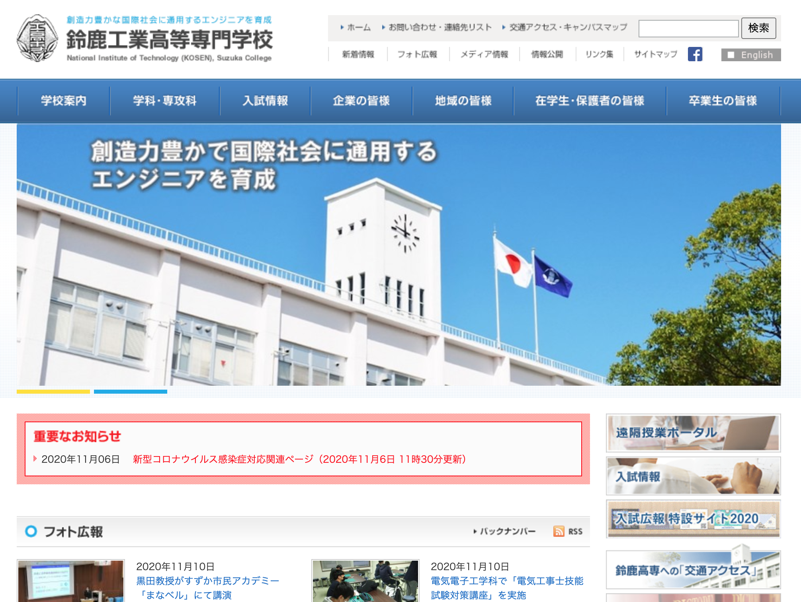

丸山 亮 / h13i32maru
個人活動
Jasper
(2016.06)
GitHub 用の Issueリーダー(Mac/Window/Linux)
TypeScript
Electron
React
styled-components
Trickle
(2018.11)
気兼ねなくアクティビティを書き溜めるサービス(Android/iOS/Mac/Windows)
TypeScript
React
React Native
Electron
styled-components
Node.js
Express
GCP
食卓ラボ
(2020.06)
家庭の食卓を楽しくするサービス(Android/iOS)
TypeScript
React Native
styled-components
Node.js
Express
GCP
ESDoc
(2015.05)
ES2015以降のJavaScript向けドキュメンテーションツール
JavaScript
Node.js
AST
Mocha
CodeLunch.fm
(2013.12)
ソフトウェアエンジニアの技術トークポッドキャスト
仕事
Cookpad株式会社
(2014.03 - 現在)
レシピサービス開発、サービス開発部 副部長、投稿開発部 部長
JavaScript
Android
Kotlin
PdM
PjM
デザインスプリント
ユーザインタビュー
仮説検証
SQL
KLab株式会社
(2010.09 - 2014.02)
ソーシャルゲームの基盤開発、エンジニアリングマネージャー
JavaScript
Knockout.js
jQuery
ngCore
Android
Java
PHP
iZE株式会社
(2006.03 - 2010.08)
USBメモリ型 Linux Thin Clientの開発
KNOPPIX
C++
Qt
ブートローダー
Remote Desktop Protocol
国立鈴鹿工業高等専門学校 電子情報工学科
(2001.04 - 2006.03)
電子工学、情報工学を履修
情報工学
C言語
Linux
電子工学
電磁気
スキルマップ
ストレングスファインダー
タイムライン
2020
個人活動
2020.10 CodeLunch.fm再開
ソフトウェアの技術トークを行っているポッドキャストを再開
https://codelunch.fm/
リリースツイート
個人活動
2020.10 Jasper v1.0.0リリース
2016年から開発しているGitHub用のIssue Reader「Jasper v1.0.0」をリリース
TypeScript
Electron
React
Design
GraphQL
styled-components
GitBook
https://jasperapp.io/
Jasper v1.0.0をリリースしました🚀（GitHub用のissueリーダー）
リリースツイート
仕事
2020.10 クックパッドアプリのリニューアル開発
Android版クックパッドアプリのリニューアルプロジェクトでAndroid開発を行った
Android
VIPER Architecture
Kotlin
Dagger
Androidアプリが新しくなりました
個人活動
2020.06 食卓ラボリリース
食卓を楽しくするサービス「食卓ラボ」をiOS/Androidでリリース
TypeScript
React Native
Design
styled-components
Node.js
Express
Google App Engine
Google Cloud Storage
Google Cloud SQL
https://dininglab.app/
食卓を楽しくするサービス「食卓ラボ」をリリースしました！
リリースツイート
仕事
2020.01 クックパッドのレシピ投稿領域の部長職を辞退
2018年から担ってきた部長職を今期は辞退して、エンジニア職に戻った
自分が使って幸せになるものを作る
2019
個人活動
2019.10 Trickleデスクトップ版リリース
2018年から開発している自分のアクティビティを保存する「Trickle」のデスクトップ版をリリース
TypeScript
Electron
React
styled-components
Design
https://trickleapp.me/
気兼ねなくアクティビティを書き留められるTrickleというサービスをリリースしました（11ヶ月ぶり2回目）
リリースツイート
2018
個人活動
2018.11 Trickleリリース
自分のアクティビティを気兼ねなく書き溜める「Trickle」をiOS/Androidでリリース。同日にAbemaTVに出演
JavaScript
TypeScript
Node.js
React Native
styled-components
Express
Google App Engine
Google Cloud Storage
Google Cloud SQL
https://trickleapp.me/
気兼ねなくアクティビティを書き留められるTrickleというサービスをリリースしました
リリースツイート
AbemaTV: SNSに疲れた人向け？コミュニケーションを取らない新アプリ「Trickle」とは
個人活動
2018.07 Jasperを無料化
2016年から開発しているGitHub用のIssue Reader「Jasper」を無料化
https://jasperapp.io/
Jasper(GitHub用のIssue Reader)を無料にしました
仕事
2018.04 クックパッド MYキッチンアプリをリリース
レシピ作者向けのアプリとしてゼロから作った「MYキッチン」アプリをiOS/Androidでリリース。現在は公開終了。
JavaScript
TypeScript
React Native
styled-components
Design
React Nativeで作った新アプリについて(5日間連載)
個人活動
2018.04 Forkwellのエンジニアインタビュー掲載
Forkwellからリレー形式のエンジニアインタビューを受けて掲載されました
クックパッドの料理好きなエンジニアが個人でもヒットツールを作り続ける理由とは？－ クックパッド 丸山亮 氏
仕事
2018.01 クックパッド 投稿開発部 部長に任命
クックパッド株式会社のレシピ事業のユーザ投稿に責任を持つ部署「投稿開発部」の部長に任命
PdM
デザインスプリント
ユーザインタビュー
仮説検証
プロトタイプ
2017
仕事
2017.08 iOS版クックパッドアプリの「レシピまとめ」をリリース
自分が投稿したレシピを自由にまとめることができる「レシピまとめ」をiOS版クックパッドアプリでリリース
PdM
PjM
仕事
2017.07 クックパッド サービス開発部 副部長に任命
クックパッド株式会社のレシピ事業全体に責任を持つ部署「サービス開発部」の副部長に任命
PdM
PjM
仮説検証
プロトタイプ
report.md
仕事
2017.01 Cookpad Tech Conf2017で登壇
「チームでプロダクト開発をするための取り組み」という内容でCookpad Tech Conf2017に登壇
チームでプロダクト開発をするための取り組み
2016
個人活動
2016.11 Node学園祭2016で登壇
Jasperの作成で得た設計や開発の話をしました
Node学園祭2016
Nodeまみれ！東京Node学園祭2016に行ってきた！【#05】
仕事
2016.09 Android版クックパッドアプリに「料理きろく」をリリース
自動で料理の写真を判定し、カレンダー形式で記録していく「料理きろく」をリリースしました
PdM
PjM
〜クックパッド アプリ、機械学習を活用した新たな機能追加〜
個人活動
2016.06 GitHub用のIssue Reader「Jasper」をリリース
GitHubのIssueを効率的に閲覧することができる「Jasper」をMac/Window/Linuxでリリース
JavaScript
TypeScript
Electron
styled-components
Design
https://jasperapp.io/
https://github.com/jasperapp/jasper
JasperというGitHub Issue Readerを作りました
リリースツイート
2015
個人活動
2015.12 「The Web Explorer」頒布
コミックマーケットC89で「The Web Explorer」に自作OSS「ESDoc」について執筆
ESDoc
JavaScript
The Web Explorer TechBooster
個人活動
2015.11 Node学園祭2015に登壇
自作したJavaScript向けのドキュメンテーションツール「ESDoc」についてNode学園祭2015で登壇
ESDoc
JavaScript
東京Node学園祭2015でESDocについて発表してきました
Node学園祭2015
仕事
2015.11 Android版クックパッドアプリで「おまかせ整理」をリリース
ブックマークしたレシピを自動的に分類する機能「おまかせ整理」をAndroid版クックパッドアプリでリリース
PdM
PjM
Android
Ruby on Rails
Solr
機械学習によるレシピの自動分類、その裏側
個人活動
2015.05 ESDocリリース
ES2015以降のJavaScript向けのドキュメンテーションツール「ESDoc」をリリース
JavaScript
ECMAScript2015
Node.js
Mocha
AST
Design
Elasticsearch
https://esdoc.org/
https://github.com/esdoc/esdoc
ESDocというJavaScript向けのAPIドキュメントツールを作りました
リリースツイート
2014
個人活動
2014.12 「丸山食堂」を実施
2日間限定で「丸山食堂」という食堂を知人のカフェを借りてオープン
丸山食堂
仕事
2014.10 SPWeb版クックパッドで「撮るレシピ」リリース
本や雑誌などのレシピを写真で撮って保存する機能「撮るレシピ」をSPWeb版クックパッドでSPAとしてリリース
JavaScript
SPA
jQuery
スマートフォンWebのフロントエンドを高速化する取り組み
仕事
2014.03 クックパッド株式会社に入社
レシピ事業を行っているクックパッド株式会社にWebフロントエンドエンジニアとして入社
仕事
2014.03 KLab株式会社を退職
2010年から努めていたKLab株式会社を退職
KLab株式会社を退職しました
個人活動
2014.02 NavyJS, NavyCreatorをリリース
Webフロントエンド向けのアプリケーションフレームワーク「NavyJS」と専用IDE「NavyCreator」をリリース。現在は開発終了。
C++
Qt
JavaScript
Canvas
http://navyjs.org/
NavyJSというJavaScriptフレームワークとNavyCreatorというIDEを作りました
https://github.com/h13i32maru/navyjs
https://github.com/h13i32maru/navyjs-legacy2
https://github.com/h13i32maru/navyjs-framework-legacy2
https://github.com/h13i32maru/navyjs-legacy1
2013
個人活動
2013.12 CodeLunch.fm開始
ソフトウェア技術系のトークをするポッドキャスト「CodeLunch.fm」を開始
rebuild.fmに憧れてCode Lunchという技術系ポッドキャストを録ってみました
仕事
2013.11 Webフロントエンドパフォーマンスチューニングについて発信
業務で得たWebフロントエンドパフォーマンスチューニングについて内容を整理して発信
Webフロントエンドパフォーマンスチューニング
仕事
2013.08 「プロ野球グランドスラム」の開発
KLab株式会社で「プロ野球グランドスラム」のWebフロントエンドを開発
JavaScript
Knockout.js
パフォーマンスチューニング
jQuery
Android WebView
「プロ野球グランドスラム」，日本国内での配信が本日スタート
仕事
2013.05 「ロード・オプ・ザ・ドラゴン」の開発
KLab株式会社で「ロードオプザ・ドラゴン」のサーバサイドを開発
PHP
ロード・オブ・ザ・ドラゴン
仕事
2013.04 「GIGABOT WARS」の開発
KLab株式会社で「GIGABOT WARS」のGUIアプリケーションフレームワークの開発
JavaScript
ngCore
KLab、『GIGABOT WARS』を欧米版「Mobage」でリリース
2012
個人活動
2012.07 RDBMSのBTree Indexについて発信
RDBMSのIndexにはなぜBTreeが使われているかということについて調査・考察した内容を発信
なぜBTreeがIndexに使われているのか
仕事
2012.08 他社協業のSNSの開発
KLab株式会社で他社協業のSNSのAndroidを開発
Android
WebView
JavaScript
2011
個人活動
2011.08 32Calorieをリリース
摂取したカロリーを簡単に記録できるAndroidアプリをリリース
Android
32Calorie - Google Play
一日の摂取カロリーを記録するアプリ「32Calorie」をリリースしました！
2010
仕事
2010.08 KLab株式会社に入社
受託開発・ソーシャルゲーム開発を行っている「KLab株式会社」にソフトウェアエンジニアとして入社
個人活動
2010.06 「Custom Twitter」をリリース
Web版のTwitterをGoogle風の見た目にカスタマイズして遊べるGreasemonkey製のジョークツール「Custom Twitter」をリリース
JavaScript
Greasemonkey
TwitterをGoogle風にカスタマイズするグリモン「CustomTwitter」を作りました
CustomTwitterが産経新聞に掲載されました
CustomTwitterがスラドに掲載されてガクブル
仕事
2010.01 Cisco VPN Clientの問題を記載
Cisco VPN ClientをKNOPPIXなどの1CD Linuxで使う場合の問題について記載
Cisco
strace
エントロピー
Cisco vpnclient物語
個人活動
2010.01 Tooxをリリース
メモ帳、ブックマーク管理、お金の管理ができるWebサービス「Toox」をリリース。現在はサービス終了。
Ruby
jQuery
Design
初めてのWebサービス「Toox」をリリースしました
Tooxリニューアルして2度目のリリース！！
Tooxを紹介していただいた方々
2006
仕事
2006.04 iZE株式会社に入社
受託開発やThin Client開発をしているiZE株式会社に入社。指紋認証搭載のUSBメモリ型Linux Thin Clientの開発
Linux
KNOPPIX
GRUB
C++
Qt
RDP
アイズ、USBメモリで指紋認証するシンクライアント「iZE Thin Client」発表
既存PCをシンクライアント端末に! アイズ、iZE Thin Clientの新モデル発売
2001

個人活動
2001.04 国立鈴鹿工業高等専門学校 電子情報工学科 入学
電子情報工学科にて電子工学、情報工学を履修。2006.03卒業
情報工学
C言語
Linux
電子工学
電磁気
国立鈴鹿工業高等専門学校